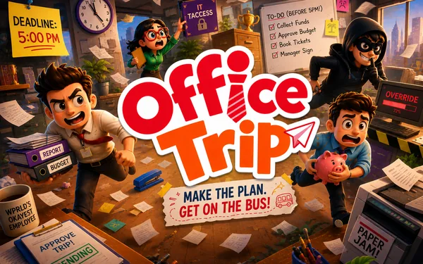

Office Trip
An online multiplayer social-deduction game: a crew completes tasks around a map while hidden saboteurs work against them, with meetings, evidence and voice chat deciding who gets believed. Built on Photon Fusion over a complete live-service backend rather than a prototype stub.
- Engine
- Unity 6000.0 · URP
- Netcode
- Photon Fusion
- Backend
- PlayFab · Unity Gaming Services
- Codebase
- 665 C# scripts
- Platform
- PC & mobile
- Status
- In development

The shape of the project
Office Trip is the largest thing I have built. It is a networked multiplayer game with a real account system behind it, which means most of the difficulty is not in the gameplay code at all — it is in everything that has to be true before two players can even see each other.
The gameplay layer alone spans seventeen modules: tasks, sabotage, meetings, evidence, security, mini-games, traversal, map, items, lobby, tutorial and the diagnostics needed to debug all of it while three clients are running.
Modular assemblies, not one big folder
The codebase is split across assembly definitions —
PlanFailure.Networking, PlanFailure.Managers,
PlanFailure.Gameplay and others — rather than living in one
Assembly-CSharp. (Plan Failure was the working title; the
namespaces kept it after the game was renamed, since renaming them would touch
every file to change something no player ever sees.) Two reasons, both practical:
- Compile times. At 665 scripts, a single assembly means every edit recompiles everything. Splitting it means a UI change does not rebuild the netcode.
- Enforced direction. Assembly references only point one way, so gameplay can call into managers but managers cannot reach back into gameplay. The compiler enforces the architecture instead of a code review having to.
One service layer, eleven backends
The live-service side runs against PlayFab and Unity Gaming Services, sitting behind a single set of services the gameplay code calls without knowing who actually answers:
- Authentication — PlayFab auth alongside platform sign-in, so a player can arrive from more than one direction and end up as the same account.
- Cloud save — profile and progress persisting across devices.
- Economy — soft currency, purchases and balances validated server-side rather than trusted from the client.
- Battle pass and progression — level curves, unlocks and season state.
- Leaderboards and player statistics.
- Remote config — tuning values changeable without shipping a build, which matters enormously once a game is live.
- Analytics — event tracking to see what players actually do rather than what the design assumed.
Keeping these behind one interface is the part I would defend hardest. Gameplay code asks for a balance or a progression state; it does not know whether that came from PlayFab, from a cache, or from a local fallback while the network is down. That boundary is what makes the backend replaceable.
The lesson that cost the most time: a live backend fails in ways a prototype never does — slow responses, partial writes, a player who reinstalls mid-season. Designing for the failure path first turned out to be much cheaper than retrofitting it.
Networking
Netcode runs on Photon Fusion. Input is gathered locally into a network input struct and applied on the authoritative tick, which keeps client prediction and server state describing the same thing. Around that sit a lobby browser for finding and joining matches, a connection-state machine for the many ways joining can fail, and voice chat so meetings actually work as meetings.
Input is abstracted so the same gameplay code serves a desktop player on keyboard and a mobile player on touch — the poller differs, the network payload does not.
Presentation and feel
Cinemachine drives the camera rig, including an extension that tightens framing in confined spaces so corridors stay readable. Player animation is driven from network state rather than local input, so what remote players see matches what the server believes. There is an accessibility layer, and an atmosphere system that stages the environment as a round progresses.
Where it stands
Still in development. The systems described here are built and running; the work ahead is content, balance and the long tail of multiplayer edge cases that only appear with real players in a real lobby.